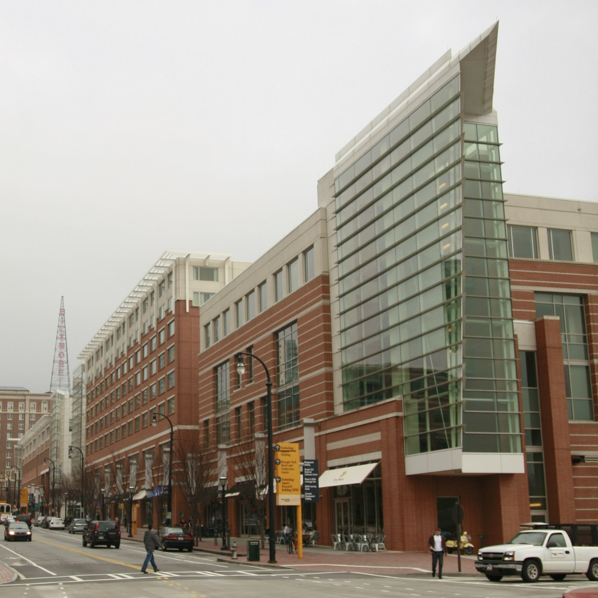
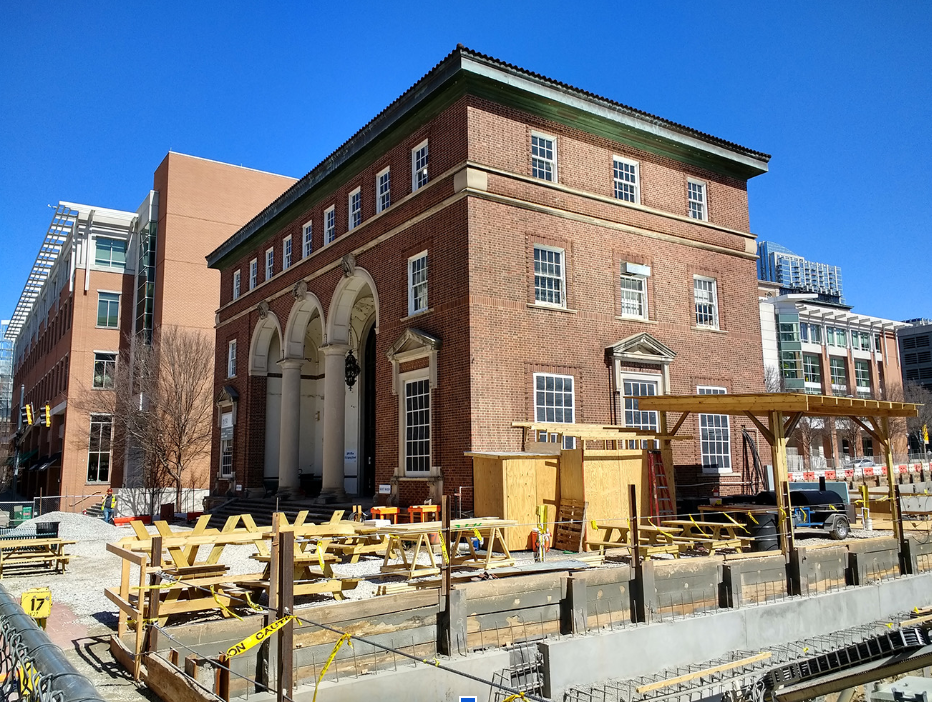
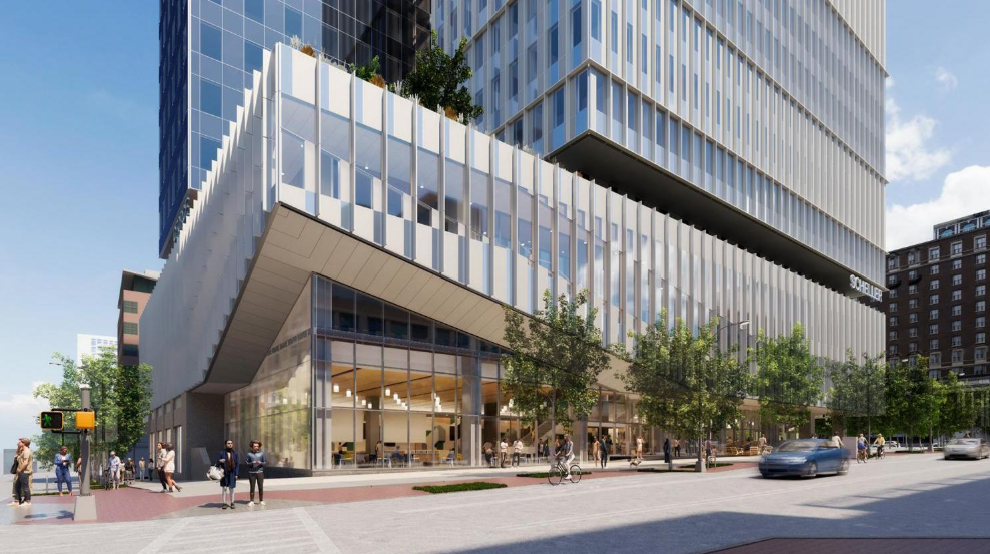

Building History
Opened in 2003, Tech Square pushed campus across the Connector into Midtown Atlanta.
Photo by James Emery (2008), CC BY 2.0; cropped and darkened for the hero.

Technology Square (also known as Tech Square) began as an effort by Georgia Tech leadership to expand eastward across the I-75/I-85 interstate and connect the university with the surrounding business community in Atlanta. .


The renovation and constant expansion of Midtown where tech square is:
Rehabilitates an eyesore
Gives Georgia Tech its first true front entrance
Extends Georgia Tech into the Midtown business community
https://app.oxblue.com/cameras/2dd5a18f259ef9cd098207800342e69b?openlink=MV/gatechphase3cam2
https://techsquare.gatech.edu/explore
Interactive map of tech square- add into digital story?
https://techsquare.gatech.edu/home
https://repository.gatech.edu/entities/archivalmaterial/e65ac481-ba23-4034-b4ca-1bef48aec368
The mixed-use area is a testament to what is possible through a partnership between higher education, the state, business and industry.
https://repository.gatech.edu/entities/archivalmaterial/bc500bbf-164d-4493-b97a-6b0c5761da27
Extends Georgia Tech into the Midtown business community
Technology Square represents Georgia Tech’s growth from a campus focused mainly on education and research into a university connected to Atlanta’s business and technology community. Its development transformed previously underused land into a major center for innovation, business, and education.Today, Technology Square gives Georgia Tech a more visible entrance to campus, provides a home for major academic programs, and connects students and faculty with businesses and industry partners. Overall, its history shows that campus expansion is not just about adding buildings, but also about creating opportunities, revitalizing neighborhoods, and strengthening Georgia Tech’s role in Atlanta's future.